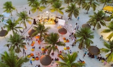

Cẩm nang du lịch Phú Thọ
Phú Thọ cách Hà Nội khoảng 90 km về phía tây bắc. Nhắc đến nơi đây, du khách thường nghĩ ngay tới Lễ hội Đền Hùng, hành hương về với cội nguồn hay rừng cọ, đồi chè bạt ngàn. Song địa phương còn nhiều điểm du lịch đa dạng khác như thành phố sôi động, vườn quốc gia rộng lớn, suối khoáng nóng...
Là một tỉnh nằm ở khu vực trung du, miền núi Bắc bộ nên thời tiết có 4 mùa xuân, hạ, thu, đông rõ rệt. Mùa xuân là mùa du lịch tâm linh và đến tháng 3 âm lịch hàng năm, hàng trăm nghìn du khách tới đây hành hương tại Khu di tích lịch sử Đền Hùng.
Cách Hà Nội không xa cùng sự kết nối của tuyến cao tốc Hà Nội - Lào Cai, đường đi Phú Thọ rất thuận tiện. Với phương tiện công cộng, du khách có thể chọn xe khách, bắt tại Mỹ Đình giá từ 60.000 đồng một lượt. Song xe khách thường đông đúc nên bạn có thể đặt xe limousine, giá từ 140.000 đồng một lượt. Hiện nay có nhiều hãng xe với các điểm đón cố định, du khách có thể lựa chọn xe Xuân Cường, Anh Phát...
Với phương tiện cá nhân như ô tô, tuyến đường nhanh nhất là theo hướng Nội Bài, rồi lên cao tốc Hà Nội - Lào Cai. Hiện có nhiều điểm xuống tỉnh từ cao tốc. Nếu tới trung tâm TP Việt Trì, du khách xuống ở IC7. Xe máy và ô tô còn có thể đi trên đường quốc lộ 2, qua Phúc Yên, Vĩnh Yên tỉnh Vĩnh Phúc. Cung đường khác là quốc lộ 32 qua thị xã Sơn Tây.
Hiện nay Phú Thọ chưa có sân bay dân dụng, du khách ở những địa phương xa hơn bay tới Hà Nội rồi di chuyển.
Trung tâm thành phố Việt Trì là điểm dừng chân đầu tiên cho du khách khám phá Phú Thọ. Thành phố nhộn nhịp xong không quá đông đúc như Hà Nội. Một số điểm gợi ý là công viên Văn Lang, được xây dựng nổi lên như một hòn ngọc. Với tổng diện tích 116 ha, công viên bao gồm đường đi bộ bao quanh hồ, cầu đi bộ thắp sáng về đêm. Đây cũng là nơi nhiều người dân, du khách tập hợp về để xem pháo hoa vào mỗi dịp lễ. Xung quanh công viên là hàng loạt quán ăn, đồ uống với giá bình dân 15.000 - 30.000 đồng.
Ngoài ra, thành phố đi vào hoạt động tuyến phố ẩm thực Nguyễn Du, với hàng loạt món ngon như cá sông, lẩu đa dạng, thịt dê, món ăn châu Âu... để du khách thưởng thức.
Khu di tích Đền Hùng thuộc đất Phong Châu, vốn là đất đế đô của Nhà nước Văn Lang. Đây là nơi thờ phụng các vua Hùng. Khu vực Đền Hùng có 4 ngôi đền, 1 ngôi chùa, 1 lăng và một số hạng mục kiến trúc khác, hài hoà với cảnh quan thiên nhiên hùng vĩ, nơi khí thiêng của non sông hội tụ. Hàng năm, Lễ hội Đền Hùng diễn ra vào ngày 10 tháng 3 âm lịch.
Hiện nay công ty du lịch tổ chức tour khám phá đền Hùng về đêm, lộ trình với lộ trình thăm đền Lăng Sương - đồi chè Mỹ Thuận - Đền Hùng - Đền Tam Giang - Ngã ba Bạch Hạc. Giá tour từ 1.500.000 đồng một người.
Đình Hùng Lô tọa lạc trên dải đất rộng khoảng 500 m2 nằm trong khuôn viên làng cổ Hùng Lô, cách đền Hùng khoảng 10 km về phía Đông. Tương truyền, đình Hùng Lô là vùng đất thiêng, nơi Vua Hùng từng nghỉ chân trong một lần đi du ngoạn. Vì vậy, người dân nơi đây lập ra miếu thờ.
Trải qua 300 năm thăng trầm lịch sử, ngôi đình vẫn nguyên vẹn giá trị kiến trúc, văn hóa, lịch sử. Khuôn viên đình gồm 5 gian nhà Tiền tế, Phương đình, lầu Chuông, lầu Trống và toà Đại đình. Tất cả đều được xây dựng bằng những loại gỗ quý như đinh, lim, sến, táu... Năm 1990, đình Hùng Lô được công nhận di tích lịch sử cấp quốc gia.
Đồi chè Long Cốc nằm trên địa bàn huyện Tân Sơn, Phú Thọ. Nơi đây được khách du lịch, các nhiếp ảnh gia... đánh giá là một trong những đồi chè đẹp nhất Việt Nam với hàng trăm, hàng nghìn quả đồi nhỏ xen kẽ nhau. Cuối thu đầu đông, đồi chè huyền ảo dưới lớp sường mờ huyền ảo, nhấp nhô nối tiếp nhau đến tận chân trời. Tới đồi chè, du khách đừng quên mua chè sản xuất theo tiêu chuẩn VietGAP, với các loại chè Đinh Bát Tiên hay chè Shan Bát Tiên.
Vườn quốc gia Xuân Sơn ở huyện Tân Sơn là điểm du lịch hấp dẫn của Phú Thọ vào mỗi mùa hè. Một ngày tại vườn quốc gia Xuân Sơn sẽ có đủ 4 mùa: buổi sáng mát mẻ như mùa xuân, buổi trưa như mùa hè, buổi chiều hiu hiu như mùa Thu và tối trời se lạnh như đông về.
Đây là điểm đến khá phù hợp dành cho khách thích loại hình du lịch sinh thái, du lịch nghỉ dưỡng. Cộng đồng các dân tộc nơi đây hiện vẫn giữ những nét đẹp văn hóa đặc trưng của dân tộc mình, vì vậy du khách có thể tìm hiểu đời sống văn hóa và giao lưu văn nghệ cùng đồng bào dân tộc Dao, dân tộc Mường.
Khu du lịch suối khoáng nóng Thanh Thủy cách thành phố Việt Trì khoảng 40 km. Mỏ nước khoáng nóng được khai thác trên diện tích khoảng một km2 dọc theo sông Đà. Nước ở đây có nhiệt độ 37-43 độ C, nguồn nước ngầm sâu khoảng 130 - 160m, suối khoáng có tác dụng làm đẹp, điều trị các bệnh về da và tốt cho tim mạch. Đặc biệt khi tới đây, du khách sẽ được hòa mình cùng với thiên nhiên và tận hưởng bầu không khí trong lành.
Nguồn: https://vnexpress.net/
-

Tăng tàu đến các điểm du lịch
Từ tháng 5, ngành đường sắt tổ chức chạy thêm nhiều tàu Hà Nội - Đồng Hới, TP HCM - Đà Nẵng/Nha Trang phục vụ khách du lịch.
-
Điểm mới tại Lễ hội Du lịch Hà Nội 2022
Gian hàng triển lãm online lần đầu tiên xuất hiện tại lễ hội trên nền tảng 2D, gồm các hoạt động tổ chức sự kiện, hội thảo, quảng bá, thương mại hóa… -

Casa Espana - điểm thưởng thức ẩm thực Tây Ban Nha tại Hà Nội
Casa Espana là một trong những nhà hàng gây ấn tượng thực khách tại Hà Nội nhờ có kiến trúc cổ điển và các món ăn truyền thống Tây Ban Nha. -
9 trải nghiệm ở Sa Pa được người nước ngoài gợi ý
Với tầm nhìn xuống những thung lũng sâu, đèo Ô Quy Hồ (cổng trời Trạm Tôn) là địa điểm được gợi ý cho khách Tây muốn đi phượt. -

Hòn Béo Cò hoang sơ giữa vịnh Bái Tử Long
Hòn Béo Cò là một trong khoảng 600 hòn đảo thuộc huyện đảo Vân Đồn, cảnh quan kỳ vĩ với vách đá dựng đứng và một bãi cát đẹp, xung quanh là hệ thống bè nổi nuôi hàu của ngư dân. Chu Đức Việt, sinh năm 1987, đến từ Hà Nội, vừa có chuyến du lịch đáng nhớ trên hòn đảo nhỏ giữa vịnh Bái Tử Long. -

Cẩm nang du lịch Phú Thọ
Phú Thọ cách Hà Nội khoảng 90 km về phía tây bắc. Nhắc đến nơi đây, du khách thường nghĩ ngay tới Lễ hội Đền Hùng, hành hương về với cội nguồn hay rừng cọ, đồi chè bạt ngàn. -

Du lịch Đà Nẵng vui quên lối về trọn bộ cẩm nang A-Z
Nhắc đến Đà Nẵng nhiều người sẽ thường nghĩ ngay đến “thành phố đáng sống nhất Việt Nam” nhờ cảnh sắc, khí hậu ôn hòa, rất thích hợp để nghỉ dưỡng.